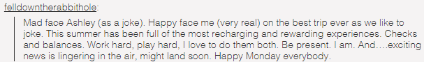
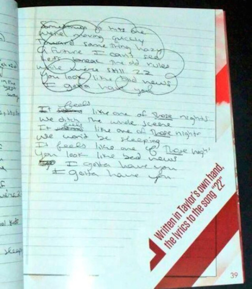
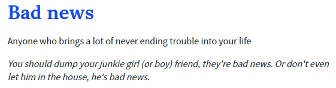
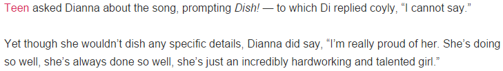

2. < 22 >
< 22 >的隐藏信息：ASHLEY DIANNA CLAIRE SELENA
< 22 >描述的内容：
在RED track by track（3分29秒开始）中TS说: The song "22" is kind of an idea I got when I was on a plane... And I wanted to write a song about what my summer had been like, with my friends, with that kind of attitude of like, "We are in our 20s, we don't know anything and it's awesome." You know, it's kind of fun to embrace that.
< 22 >的完成时间：
TS和Selena、Ashley成为朋友的时间比较早
TS和Dianna成为朋友是2011年9月之后
TS和Claire成为朋友是从2012年初开始
既然TS说< 22 >是写这4个朋友，那< 22 >最早写于2012年初
2012年5月底6月初TS已经完成了RED的全部录制，大机器老板Scott也表示成果惊人，敬请期待。< 22 >最晚完成于12年6月初。
TS说这首歌写的是about what my summer had been like with my friends
F4在国庆节倒是在Hyannis Port好好享受了一次summer time
12年7月9号（Chapter 1.2.4 – Stuff is About to Happen中TS在FB上做预告Staff is about to happen的同一天），DA在她当时还未关闭的Tumblr上说: on the best trip ever as we like to joke. This summer has been full of the most recharging and rewarding experiences.
但是RED在6月初就已经完成了，8月首单WANEGBT都发行了。
< 22 >显然不可能写的是她们国庆节度假的事。
那写于6月初呢？5月15号，下午TS和ED一起写了EHC，晚上和DA一起吃饭被狗仔第一次拍到照片之后，她和DA直到国庆节再未有公开交集。如果< 22 >写于6月初，是不是意味着她们在公众视线之外的地方一起度过summer time？
或者就写于5月份，也许对TS来说温暖的洛杉矶5月也能有summer的感觉。
如果还要早于5月份，那就意味着TS所说的write about my summer with friends只是个说辞。
这首描写友情的< 22 >的原始手稿中有这么一段歌词，最后被TS删掉没有采用（被圈掉的那段）
Sometimes it hits me we're moving quickly
Toward something hazy, a future I can't see
Let's break the old rules while we're still 22
You look like bad news I gotta have you
（这里范围又缩小了，Ashley和Selena都是TS以前的朋友，只有Dianna和Claire是新认识的朋友，才需要考虑是否moving quickly）
为什么一段迅速发展的友情让TS觉得前路迷茫，未来看不清？
究竟是怎样的友情让TS觉得需要break the old rules？
俚语字典中关于bad news的解释是：
Bad news：一个会给你带来无穷无尽麻烦的人
例句1：你应该甩了你那个瘾君子女（男）朋友，她（他）是个大麻烦
例句2：不要让他进你家，他是个大麻烦
Ashley、Dianna、Claire、Selena这四个人，尤其是Dianna和Claire这两个新朋友，她们是什么品行不端的坏朋友吗？为什么要说人家是bad news？
这里的bad news不是指品行方面，而且因为其他原因，如果她们继续moving forward，这个人就会变成一个bad news，会变成一个trouble，这一点从一开始TS心里就明白，可还是选择了gotta have you。
I knew you were trouble when you walked in…
I saw the red flags from the first second…
如果不看这首歌的MV，不看这首歌的隐藏信息，不知道任何背景，单纯只看歌词，你们会不会觉得这是一首写爱情的歌？
歌词中还有几句我比较在意
fall in love with strangers —— < 22 >
your lover in the foyer doesn't even know you —— < The Lucky One >
We're happy free confused and lonely at the same time —— < 22 >
Ending up kind of caught up in this whole thing and lonely and feeling misunderstood —— < The Lucky One >
But you're so confused, cause you don't feel pretty, you just feel used —— < The Lucky One >
2012年10月22号，RED发行；
2012年10月底，RED Track by Track视频释出，在这视频里TS讲了每首歌的写作背景；
2012年11月上旬，DA接受Teen采访时被问到< 22 >
Teen asked Dianna about the song, prompting Dish! —— to which Di replied coyly, "I cannot say."
Yet though she wouldnt dish any specific details, Dianna did say, "Im really proud of her. Shes doing so well, shes always done so well, shes just an incredibly hardworking and talented girl."
Teen向Dianna问起这首歌，来点内幕嘛！—— 对此Dianna害羞的回答：“我不能说”。
尽管她不肯透露任何具体的细节，Dianna说起Taylor：“我真的为她感到骄傲，她太棒了，她一直都是这么出色，她是一个非常勤奋又有天赋的女孩。”
这时RED已经发行了，人人都从歌词本上看到了隐藏信息中有Dianna的名字，这时TS的RED Track by Track也已经出了，TS已经对每首歌写什么给出了官方解释。
DA是可以回答的，她可以照搬TS给出的“标准答案”：这首歌是写她们几个好朋友在一起度过愉快夏日的故事。
但是DA害羞的回答：“我不能说”。